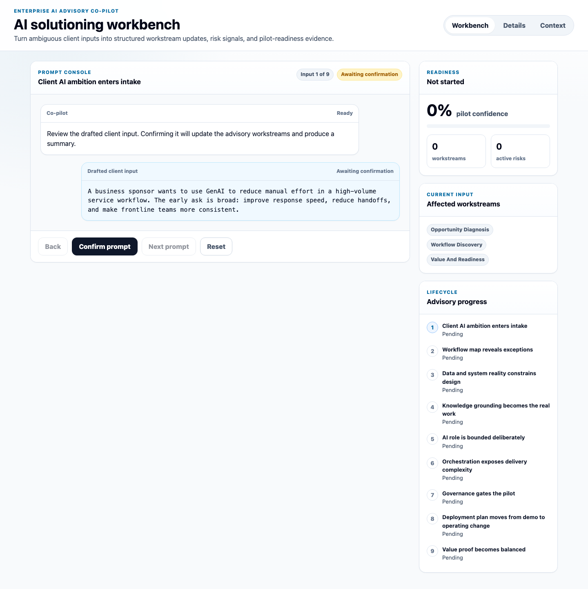

Context changes solution design
Business goals, frontline workflow, exception paths, and tacit knowledge shape what the AI system should assist.
Enterprise AI Advisory Co-Pilot
For enterprise AI adoption teams turning ambition into governed, deployable workflows.

Enterprise AI Adoption
Workflow details, knowledge quality, agent boundaries, governance gates, evaluation criteria, adoption, and value proof move together. The co-pilot turns each client input into connected advisory decisions.
The Operating Gap
Enterprise software delivery works well when requirements, statuses, handoffs, and outputs can be made deterministic. AI deployment adds probabilistic behavior, changing context, knowledge quality, policy boundaries, and human review design.
Business goals, frontline workflow, exception paths, and tacit knowledge shape what the AI system should assist.
Policies, historical cases, approvals, and expert judgment need source ownership, freshness, and evaluation examples.
Read/write permissions, tool access, identity, and confidence thresholds define safe action scope for version one.
Audit logs, review gates, incident paths, training, and value metrics determine deployment confidence.
The Product Idea
The prototype simulates how advisory teams can confirm messy client inputs and keep the operating model current across business, workflow, technical, governance, deployment, and value workstreams.
Each prompt represents a realistic update from discovery, IT, compliance, delivery, or operations.
The co-pilot turns inputs into facts, missing evidence, risks, decisions, and next questions.
The readiness score changes as constraints become clearer and launch readiness becomes evidence-based.
Defined Demo Use Case
The demo follows a business sponsor trying to use GenAI to reduce manual effort in a high-volume service workflow. The co-pilot helps narrow the pilot into a bounded, governed, read-heavy assistant with review gates and balanced value metrics.
Prompt Console
Trace how confirmed inputs update facts, risks, decisions, and next questions across every advisory workstream.
Review all workstream evidenceSelected Workstream
Workstreams Updated
The advisory model has been updated.
Co-Pilot Interpretation